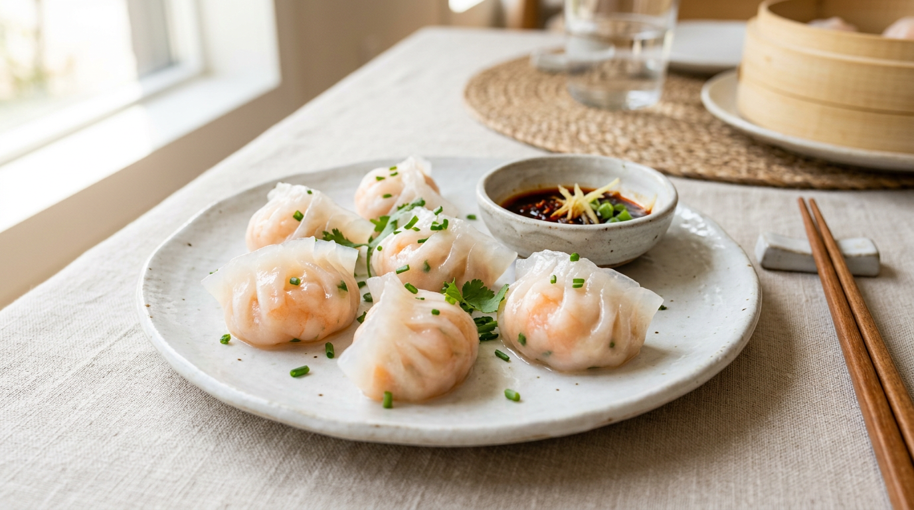
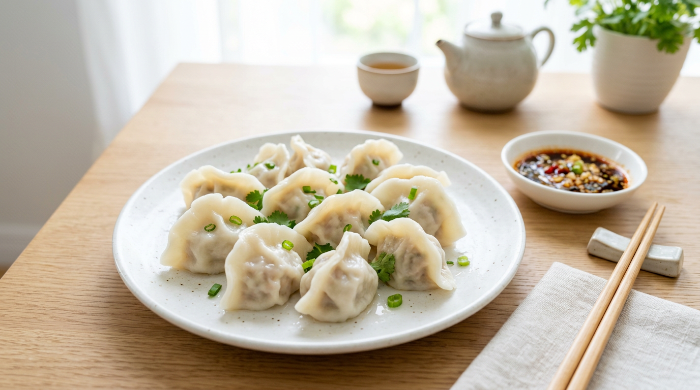
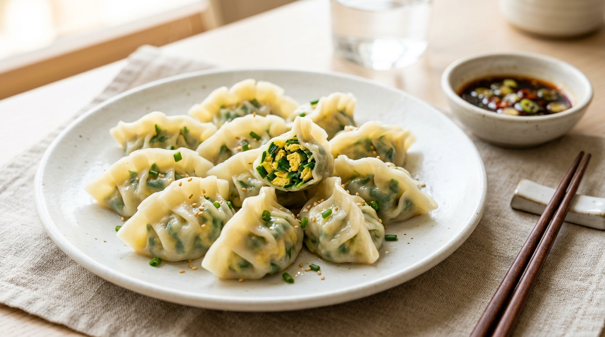
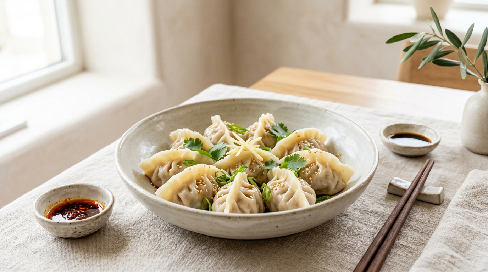

手包みの温もり、溢れ出す素材の旨味。
厳選された素材と繊細な手仕事が織りなす、
澄み渡る美味しさをお楽しみください。

晶莹剔透的皮包裹着整颗鲜虾，每一口都是大海的鲜甜。

传统比例调配的肉馅与爽脆白菜，还原最纯粹的家常味道。

鲜嫩韭菜与金黄炒蛋的经典组合，清香扑鼻，素雅而不失鲜美。

CC点心は、伝統的な餃子の技法に、現代の感性を融合させた新しいスタイルのレストランです。我们的厨房では、一つひとつ丁寧に皮を延ばし、餡を包んでいます。机械では再現できない、手仕事ならではの食感和味わいを追求。素材本来の優しい色と香りを大切にした饺子は、まるで五感を润すような辉きを放ちます。